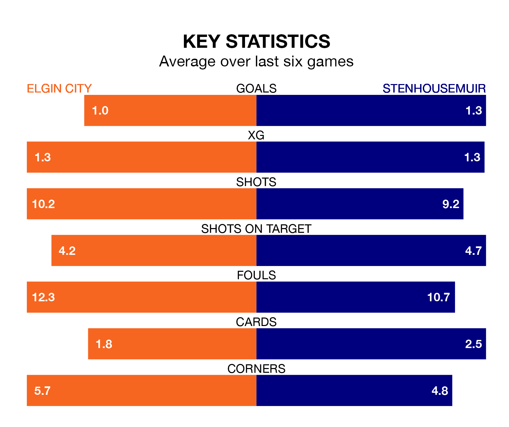

Stenhousemuir are strong favourites to take all three points despite Elgin City's home advantage in Saturday's match at Borough Briggs.
*Betting Company* are offering odds of 1.55 on Stenhousemuir sealing the win, with the visitors sitting first in League Two table.
Elgin, who are sixth in the league and 29 points behind the Warriors, are priced at 4.5 to win. A draw is set at 4.1.
With 21 goals in 24 games so far this season, Elgin are the league's lowest scorers with 0.9 goals per game. And they are conceding more than average, letting in 41 goals at a rate of 1.7 per game.
Stenhousemuir, meanwhile, are above average scorers, with 1.7 goals per game, compared to a league average of 1.3. They have conceded 0.7 goals per game.
In Matthew Aitken, the Warriors have the league's most on-form striker so far this season. He has notched 13 goals in 24 appearances.
His goal rate of one every 156 minutes is much quicker than that of Russell Dingwall, City's top scorer with a goal every 408 minutes, and a total of four goals in 19 games.
In the last 10 years, Elgin and Stenhousemuir have played each other on 20 occasions. Elgin won seven of them, Stenhousemuir eight, and they drew five times.
On average, the Black & Whites scored 1.4 goals and the Warriors 1.5 in those matches.
Their last meeting was on December 23, when Stenhousemuir won 2-0 at home.
The Black & Whites are in mixed form in League Two, with three wins and three losses from their last six games.
With four wins and a draw over that period, the visitors' form is better – they have taken 13 points from 18, compared to the home side's nine.
Elgin's last match was on February 10, a 2-1 win against Spartans, with Mark Gallagher and Mitchell Taylor getting the goals for the Black & Whites.
Stenhousemuir drew 1-1 with East Fife last time out, also on February 10, with Ross Meechan on the scoresheet.
Updated: 09:02 (UTC), 13/02/24